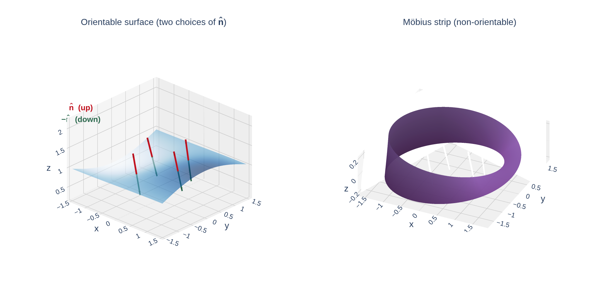
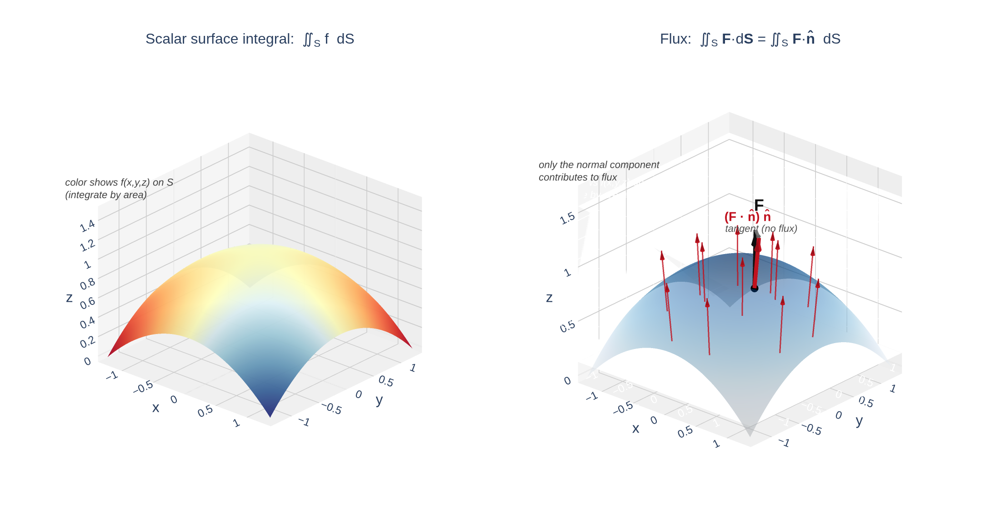

Section 16.7: Surface Integrals
Vector Calculus
MTH 310
Calculus III
Surface Integrals: Two Flavors in Parallel
In Section 16.2 we defined two kinds of line integrals — one for scalar functions, one for vector fields. Now we lift each of them up a dimension.
| Scalar version | Vector version | |
|---|---|---|
| Line integral (1D object) | \(\displaystyle\int_C f\,ds\) | \(\displaystyle\int_C \vec{F}\cdot d\vec{r} = \int_C \vec{F}\cdot\vec{T}\,ds\) |
| weighted by | arc length \(ds\) | tangent component \(\vec{F}\cdot\vec{T}\) |
| measures | total of \(f\) along \(C\) | flow along \(C\) (work) |
| Surface integral (2D object) | \(\displaystyle\iint_S f\,dS\) | \(\displaystyle\iint_S \vec{F}\cdot d\vec{S} = \iint_S \vec{F}\cdot\vec{n}\,dS\) |
| weighted by | surface area \(dS\) | normal component \(\vec{F}\cdot\vec{n}\) |
| measures | total of \(f\) over \(S\) | flow through \(S\) (flux) |
The shift: for curves, “flow” meant tangential (along the curve). For surfaces, “flow” means perpendicular (through the surface). That's why flux uses \(\vec{n}\) instead of \(\vec{T}\).
Scalar Surface Integrals: The Idea
Imagine a thin metal sheet shaped like a surface \(S\), with density \(\rho(x,y,z)\) at each point. The total mass is:
\[\text{mass} = \iint_S \rho(x,y,z)\,dS\]
More generally, \(\iint_S f(x,y,z)\,dS\) adds up the values of \(f\) over the surface, weighted by area.
Computing \(\iint_S f\,dS\) from a Parametrization
From Section 16.6, if \(S\) is parametrized by \(\vec{r}(u,v)\) over domain \(D\), then
\[dS = |\vec{r}_u \times \vec{r}_v|\,dA.\]
Scalar Surface Integral (Parametric Form)
\[\iint_S f(x,y,z)\,dS = \iint_D f\!\left(\vec{r}(u,v)\right)\;|\vec{r}_u \times \vec{r}_v|\;dA\]
Special Case: Surface Integral over a Graph \(z = g(x,y)\)
When \(S\) is a graph \(z = g(x,y)\), parametrize with \(x\) and \(y\) directly: \(\vec{r}(x,y) = \langle x,\,y,\,g(x,y)\rangle\).
Recall from 16.6:
\[|\vec{r}_x \times \vec{r}_y| = \sqrt{g_x^2 + g_y^2 + 1}\]
So the scalar surface integral becomes:
\[\iint_S f(x,y,z)\,dS = \iint_D f\!\left(x,\,y,\,g(x,y)\right)\sqrt{g_x^2 + g_y^2 + 1}\;\,dA\]
where \(D\) is the projection of \(S\) onto the \(xy\)-plane.
If \(f \equiv 1\), this reduces to the surface-area formula from Section 15.6:
\[\text{Area}(S) = \iint_D \sqrt{g_x^2 + g_y^2 + 1}\;dA\]
Scalar surface integrals include surface area as a special case — just as \(\int_C 1\,ds\) gives arc length.
Example 1: Scalar Surface Integral over a Graph
Example 1
Evaluate \(\displaystyle\iint_S y\,dS\), where \(S\) is the surface \(z = x + y^2\) over the rectangle \(0 \le x \le 1\), \(0 \le y \le 2\).
Quick Check: Set Up a Scalar Surface Integral
Set up (but do not evaluate) \(\displaystyle\iint_S (x^2 + z)\,dS\) where \(S\) is the part of the plane \(z = 4 - 2x\) over the rectangle \(0 \le x \le 2\), \(0 \le y \le 3\).
Example 2: Scalar Surface Integral on a Sphere
Example 2
Evaluate \(\displaystyle\iint_S y^2\,dS\) where \(S\) is the part of the sphere \(x^2+y^2+z^2 = 4\) that lies inside the cylinder \(x^2+y^2 = 1\) and above the \(xy\)-plane.
Oriented Surfaces (Bridge to Flux)
Before we can define flux, we need to pick a direction at every point of the surface — an orientation.

An orientable surface has two distinct sides. At each point there are two unit normals, \(\vec{n}\) and \(-\vec{n}\). Choosing one consistently over all of \(S\) gives an orientation.
Standard conventions:
- Closed surfaces (sphere, torus, cube): outward normal is positive.
- Graphs \(z = g(x,y)\): upward normal is positive.
- Every problem statement tells you which orientation to use.
Not every surface is orientable — the Möbius strip has only one side. But every surface we will integrate over in this course is orientable.
Unit Normals for the Two Most Common Surfaces
For flux we need the unit normal \(\vec{n}\). Two parametrizations cover almost every problem.
Graph \(z = g(x,y)\), \(\;\vec{r}(x,y) = \langle x, y, g(x,y)\rangle\):
\[\vec{r}_x\times\vec{r}_y = \langle -g_x,\,-g_y,\,1\rangle\]
\[\vec{n}_{\text{up}} = \frac{\langle -g_x,\,-g_y,\,1\rangle}{\sqrt{g_x^2+g_y^2+1}}\]
The \(+1\) in the third slot means this vector points upward (so it is the positive orientation).
Sphere of radius \(R\), spherical parametrization.
First, the easy-to-remember outward unit normal:
\[\vec{n}_{\text{out}} = \frac{\langle x,y,z\rangle}{R} = \hat{r}\]
(just the position vector, normalized.) Then the cross product factors cleanly as
\[\vec{r}_\phi\times\vec{r}_\theta = R^2\sin\phi\;\hat{r}.\]
Since \(\sin\phi \geq 0\), this points outward automatically.
To reverse either orientation, multiply by \(-1\) (or swap the order of the cross product).
Flux: Definition and Parametric Formula
Now the big idea: how much of a vector field \(\vec{F}\) flows through a surface.

At each point, only the piece of \(\vec{F}\) perpendicular to \(S\) passes through — that piece is \(\vec{F}\cdot\vec{n}\).
Flux of \(\vec{F}\) across an Oriented Surface \(S\)
\[\iint_S \vec{F}\cdot d\vec{S} \;=\; \iint_S \vec{F}\cdot\vec{n}\;dS\]
Parametric formula. Since \(\vec{n}\,dS = (\vec{r}_u \times \vec{r}_v)\,dA\), the \(|\cdot|\) on the cross product cancels the \(|\cdot|\) in the denominator of \(\vec{n}\):
Theorem: Flux via a Parametrization
\[\iint_S \vec{F}\cdot d\vec{S} = \iint_D \vec{F}\!\left(\vec{r}(u,v)\right)\cdot(\vec{r}_u \times \vec{r}_v)\,dA\]
Use the cross product itself — not its magnitude. Order matters: \(\vec{r}_u\times\vec{r}_v\) vs. \(\vec{r}_v\times\vec{r}_u\) gives opposite orientations.
Flux through a Graph \(z = g(x,y)\)
Plug \(\vec{r}_x\times\vec{r}_y = \langle -g_x, -g_y, 1\rangle\) into the parametric flux formula.
If \(\vec{F} = \langle P, Q, R\rangle\), then
\[\vec{F}\cdot(\vec{r}_x\times\vec{r}_y) = -P\,g_x - Q\,g_y + R\]
(with \(P,Q,R\) evaluated at \((x,y,g(x,y))\)).
Upward orientation (positive):
\[\iint_S \vec{F}\cdot d\vec{S} = \iint_D \!\left(-P\,g_x - Q\,g_y + R\right)\,dA.\]
Downward orientation: flip the sign.
\[\iint_S \vec{F}\cdot d\vec{S} = \iint_D \!\left(P\,g_x + Q\,g_y - R\right)\,dA.\]
No square root. The magnitude from \(dS\) cancels the denominator of \(\vec{n}\). This is the single most useful formula in the section.
Quick Check: Identify the Flux Setup
\(\vec{F}(x,y,z) = \langle 0, 0, z\rangle\) and \(S\) is the part of the paraboloid \(z = 1 - x^2 - y^2\) above the \(xy\)-plane, with upward orientation. Write \(\vec{F}\cdot(\vec{r}_x\times\vec{r}_y)\) as a function of \(x\) and \(y\).
Example 3: Flux across a Plane
Example 3
Find the flux of \(\vec{F}(x,y,z) = \langle x, 2y, 3z\rangle\) upward through the triangular portion of the plane \(2x + y + 2z = 6\) in the first octant.
Example 4: Flux across the Unit Sphere
Example 4
Find the flux of \(\vec{F}(x,y,z) = \langle z, y, x\rangle\) outward across the unit sphere \(x^2+y^2+z^2 = 1\).
Example 5: Flux on a Cone (Downward Orientation)
Example 5
Evaluate \(\displaystyle\iint_S \vec{F}\cdot d\vec{S}\) where \(\vec{F}(x,y,z) = \langle -x, -y, z^3\rangle\) and \(S\) is the part of the cone \(z = \sqrt{x^2+y^2}\) between \(z = 1\) and \(z = 3\), with downward orientation.
Quick Check: Does Orientation Matter?
If the flux of \(\vec{F}\) through a surface \(S\) with upward orientation is \(12\), what is the flux with downward orientation?
Application: Heat Flow across a Surface
If the temperature in a solid is \(u(x,y,z)\), the heat-flow vector is
\[\vec{F} = -K\,\nabla u \qquad (K > 0,\; \text{thermal conductivity}).\]
Heat flows from hot to cold — opposite the gradient.
The rate of heat flow across a surface \(S\) is
\[\text{rate} = \iint_S \vec{F}\cdot d\vec{S} = -K\!\iint_S \nabla u\cdot d\vec{S}.\]
Example 6
Temperature inside a ball: \(u = C/r\) where \(r = \sqrt{x^2+y^2+z^2}\). Find the rate of heat flow across the sphere \(S\) of radius \(a\).